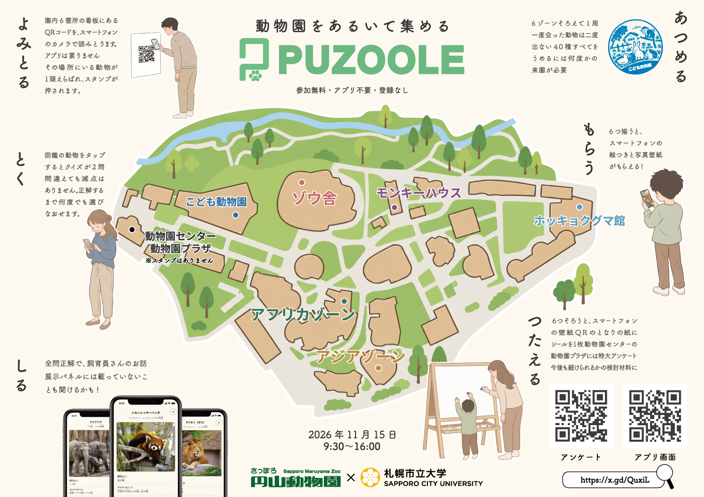

スタンプであるく どうぶつえん
ゾーンの看板にあるQRコードを読みとると、
そのゾーンにいるどうぶつが1頭、スタンプになります。
0 / 6
6つのゾーンに、それぞれ1つずつスタンプが押せます。 まだ図鑑にいないどうぶつから選ばれるので、 同じ子は2度出てきません。
札幌市立大学と円山動物園のコラボポスターです。
QRコードがあるゾーンが描かれています。ぜひ探してみてね。

会えたどうぶつがここに並びます。 台紙をリセットしても消えません。 はじめは白黒ですが、タップしてクイズに全問正解すると色がつき、 記念の画像と飼育員さんのお話が読めます。